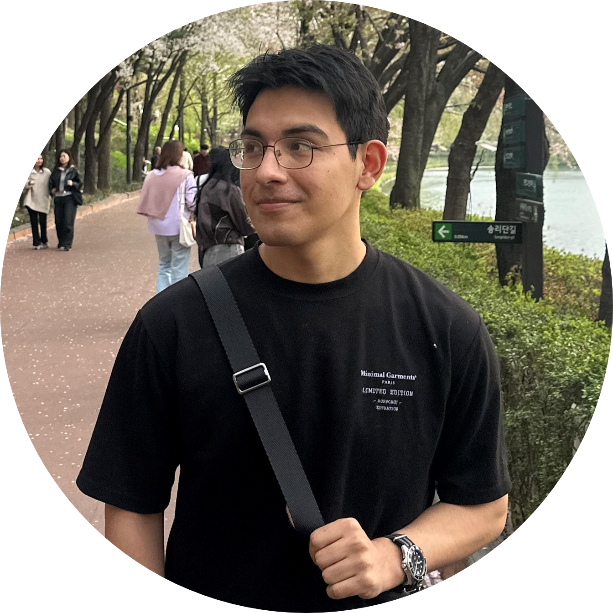
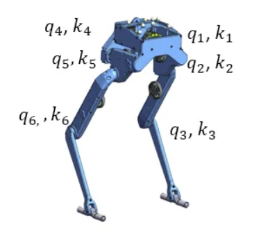
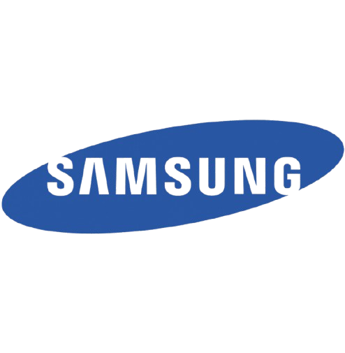
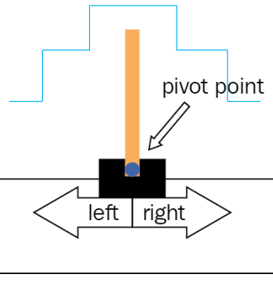
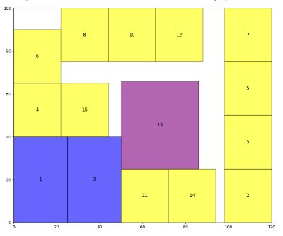
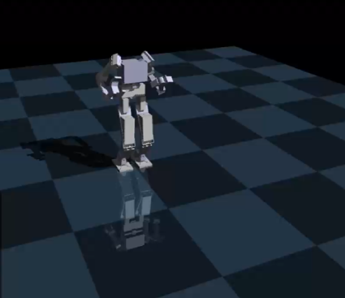
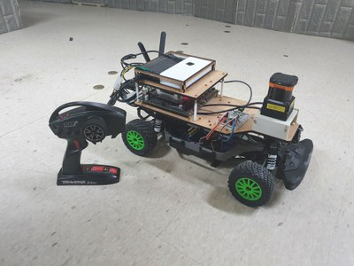
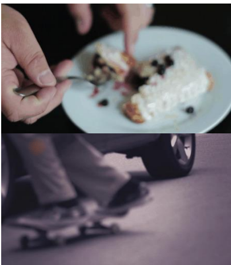

|
Alfred Cueva I am a Master's student in Robotics and AI at Georgia Tech. I am currently a researcher at the LIDAR Lab, supervised by Prof. Ye Zhao and Zhaoyuan Gu, where I work on learning-based control and motion planning for embodied AI. I also collaborate with the RL2 Lab, advised by Prof. Danfei Xu, working closely with Zhenyang Chen. My research spans the full robotics pipeline from algorithm design and high-fidelity simulation to real-world deployment, with a focus on building scalable sim-to-real frameworks for loco-manipulation in unstructured environments. Previously, I worked at Samsung as a Robotics & ML Software Engineer for 2 years, where I led end-to-end development of autonomous systems, from perception and motion planning to real-world deployment on various robots. I received my Bachelors in Mechanical Engineering from Seoul National University during which I was a Research Intern at Dynamic Robotics System Lab, advised by Prof. Jaeheung Park and Dr. Daegyu Lim focusing on model-based priors guided Reinforcement Learning for legged robots. I also interned at Soft Robotics & Bionics Lab under the guidance of Prof. Yong-Lae Park on soft robotic multi-modal sensing for industrial robots. During my time in Korea, I co-organized a non-profit organization dedicated to AI education, AI Tech Play, and helped host the first nationwide AI camp focused on autonomous racing competitions for high school students. I am also passionate about building community and was a founding member of ASAPEC, a student-led organization for underrepresented minorities, where I organized mentorship programs and workshops to support students from diverse backgrounds. I'm currently looking for internships, feel free to reach out! Fun Fact: I am fluent in 4 languages.
|
 |
ResearchUltimately, I aim to build general-purpose robots that can reason, plan, and act effectively in the real world, contributing meaningfully to society. My current research focuses on three directions:
|

|
REFINE-DP: Diffusion Policy Fine-tuning for Humanoid Loco-manipulation via Reinforcement Learning
Zhaoyuan Gu*, Yipu Chen*, Zimeng Chai*, Alfred Cueva, Thong Nguyen, Huishu Xu, Yifan Wu, Amelie Kim, Issac Legene, Ye Zhao, Yongxin Chen [Project Page] | [Video] RA-L 2026 A hierarchical framework joint optimizing a diffusion policy (DP) high-level planner and an RL-based low-level loco-manipulation controller to mitigate distribution shift in offline-trained humanoid systems. The DP is fine tuned via PPO-based policy gradients while the controller adapts to the planner's evolving commands. Achieves >90% success on door traversal and object transport tasks, including extreme out-of-distribution scenarios with smooth real world execution. PyTorch · MuJoCo · IsaacGym · Diffusion Models · Reinforcement Learning · Whole-Body Control · Sim-to-Real |
|
VIPER: Video-Instructed Physics-grounded Embodied Reward
CoRL 2026 We leverage VLMs to perform principled frame selection from demonstration videos and extract physics-grounded reward signals for RL training. By grounding reward computation in physically meaningful video frames, our approach enables robots to learn complex behaviors from raw video without manual reward engineering. PyTorch · VLMs · Reinforcement Learning · Reward Shaping · Video Understanding |
|

|
TacDP: Tactile Aware Diffusion Policy for Wholebody Humanoid Manipulation
CoRL 2026 We equip a humanoid robot with large-area tactile sensors on the chest and forearms to enable direct contact force measurement during whole-body manipulation. Integrated into the control pipeline alongside an arm stabilization mechanism, tactile feedback improves robustness across contact-rich tasks including object reorientation, lifting bulky objects, and collaborative transport, highlighting tactile perception as a critical modality for reliable real-world physical interaction. PyTorch · Diffusion Policy · Tactile Sensing · Whole-Body Control · Sim-to-Real |

|
Autonomous Drilling Robot for Cluttered Environments
Project at Samsung (Smart Construction Robotics Challenge Winner) [Video] | [Coverage] Led development of autonomous drilling robot for construction sites, deploying rule-based computer vision and motion planning for precise surface drilling with ±2mm accuracy. System handles 20kg payloads and operates in GPS-denied cluttered environments, reducing human exposure to hazardous tasks by 80%. Deployed across 5+ Samsung Factory sites. ROS2 · OpenCV · Motion Planning · Force Control |

|
Adaptive AMR for Safe and Efficient Material Transport
Project at Samsung, in collaboration with Hyundai Robotics [Coverage] Led development and deployment of adaptive AMR fleet (300+ robots) for material transport in construction sites. Implemented safety-aware navigation achieving 92% successful delivery rate in dynamic, GPS-denied environments. System handles 200kg payloads with real-time obstacle avoidance and multi-robot coordination. ROS2 · LiDAR SLAM · Nav2 · Fleet Management · Motion Planning |
|
 |
RL-Policy Guided Optimal Design of Parallel Elastic Actuator for Weak Actuation of Bipedal Robot
Alfred Cueva, Jaeheung Park, Yong-Lae Park [Code] | [Report] Bachelor's Thesis (Outstanding BS Thesis Presentation Award) Developed meta-RL optimization framework combining model-free learning with physics-based actuator models for bipedal locomotion. Achieved 40% energy reduction in simulated bipedal walking while optimizing parallel elastic actuator stiffness parameters. Framework demonstrated successful sim-to-real transfer potential for weak actuation scenarios. MuJoCo · PyTorch · MAML · Model-Based RL |
Current Position |
|
|
Georgia Institute of Technology
Graduate Researcher Aug 2024 - Present
Developed hierarchical control framework jointly optimizing a diffusion policy planner and RL-based low-level controller to address distributional mismatch in contact-rich humanoid tasks, achieving over 90% success rate on door traversal, object transport, and dynamic climbing on Booster platform (RA-L 2026).
PyTorch · Isaac Sim/Lab · USD · Docker · VR Systems · MuJoCo · Diffusion Models · PPO/SAC |
Experience |
|
 |
Samsung
Robotics & ML Software Engineer Mar 2024 - Aug 2025 (1 yr 6 mos)
Spearheaded end-to-end YOLOv8 perception pipeline for mobile robots in harsh industrial environments, from dataset creation (10K+ images) to on-device optimization and CI/CD integration, achieving 92% detection accuracy with 30ms inference latency across 5+ Samsung sites.
PyTorch · ROS2 · Isaac Sim · YOLOv8 · SLAM · Embedded ML · CI/CD |
|
Samsung
Computer Vision Intern Jul 2023 - Aug 2023 (2 mos)
Developed real-time heat anomaly detection system for semiconductor manufacturing equipment using custom ML architecture and GPU-accelerated pipelines, achieving 95% detection accuracy with <100ms latency for proactive maintenance alerts.
PyTorch · SAM · OpenCV · GPU Optimization · Sensor Fusion · Real-Time Systems |
|
|
Seoul National University
Research Assistant - Dynamic Robotics Systems Lab, advised by Prof. Jaeheung Park Dec 2022 - Feb 2024 | Outstanding Thesis Award (1/120) Proposed novel model-free RL sim-to-real framework for energy-efficient bipedal locomotion with weak actuators, combining meta-RL optimization with physics-based actuator models to achieve 19% speed improvement and 22% energy cost reduction. MuJoCo · PyTorch · MAML · Model-Based RL |
|
|
Seoul National University
Research Intern - Soft Robotics & Bionics Lab, advised by Prof. Yong-Lae Park Mar 2021 - Aug 2021
Developed software and system integration for capacitive touch-sensing grid as force-control interface for industrial sewing robots, increasing operation speed by 20% and reducing operator training time by 30% through real-time feedback optimization.
Python · C++ · Sensor Fusion · Capacitive Sensing · Real-Time Control |
Projects |

|
Diffusion Policy for Multi-Step Block Assembly
Alfred Cueva*, Seok Joon Kim*, Kyle Kam* [Report] | [Video] | [Code] Graduate Course Project (Deep Reinforcement Learning, Fall 2025) Implemented transformer-based diffusion policies for long-horizon visuomotor manipulation, focusing on sequential pick-and-place and multi-block assembly. Integrated camera-calibrated ArUco-based 6DoF pose estimation with action diffusion for closed-loop execution on UR10e robot. Achieved 85% success rate on 3-block assembly tasks with 200+ teleoperated expert demonstrations. PyTorch · LeRobot · ROS · OpenCV · ArUco Markers · UR10e |
|
Multi-Modal Perception for Autonomous Maze Navigation
Alfred Cueva*, Carlos Gaeta* [Code] Graduate Course Project (Introduction to Autonomy, Fall 2025) Designed end-to-end ROS2 autonomous navigation stack integrating LiDAR-based Bug0 obstacle avoidance with vision-based traffic sign recognition using KNN classifier. Deployed on TurtleBot3 platform for autonomous maze navigation with real-time sign detection and adaptive waypoint generation. Achieved 95% sign recognition accuracy across 10+ maze configurations. ROS · Python · OpenCV · TensorFlow · LiDAR · TurtleBot3 |
|
|
 |
Reinforcement Learning Agent for Rapid Task Adaptation
Alfred Cueva*, Gene Chung*, Taehung Kim*, Sumin Ye* [Code] | [Report] Graduate Course Project (Reinforcement Learning, Spring 2023) Developed Task-Invariant Agent (TIA) network for multi-task RL, enabling rapid adaptation to new tasks using model dynamics. The architecture integrates a modified DQN policy network, an encoder for latent task representation from experience sequences, and a model predictor for system dynamics. Achieved 3x faster adaptation to new reward functions compared to baseline DQN, demonstrating robust generalization across CartPole task variants. PyTorch · OpenAI Gym · DQN · Meta-Learning |
|
 |
Constrained 2D Online Bin Packing Problem using Reinforcement Learning
Alfred Cueva [Code] | [Report] Graduate Course Project (Combinatorial Optimization, Spring 2023) Implemented Heuristics Integrated Deep RL approach for online 2D bin packing with placement constraints. Trained PPO agent to learn optimal packing strategies that outperform traditional heuristics. Achieved 15% improvement in space utilization over baseline greedy algorithms. PyTorch · PPO · OpenAI Gym · Combinatorial Optimization |
|
 |
Control Techniques for Humanoid Robots
Alfred Cueva [Code] Graduate Course Project (Theory and Practice of Humanoid Walking Control, Fall 2022) Implemented 10+ humanoid control algorithms including ZMP-based walking pattern generation, Linear Inverted Pendulum Model, preview control, and whole-body operational space control. Developed CoM estimation using complementary filters and capture point-based stabilization for dynamic walking on simulated bipedal robots. C++ · MATLAB · Whole-Body Control · QP Solvers · Trajectory Optimization |
|
 |
RC Car Autonomous Driving
Alfred Cueva*, Max Acosta* [Code] Graduate Course Project (Introduction to Intelligent Systems, Spring 2023) Developed autonomous driving system for RC Car Racing Challenge using LiDAR-only perception for mapless navigation. Implemented behavior cloning with Gaussian Process Regression to learn driving policy from expert demonstrations. Trained end-to-end control policy mapping raw sensor observations to steering and throttle commands. Achieved top-3 finish in class competition with average lap speed of 2.5 m/s while maintaining safe wall clearance of 15cm. Python · PyTorch · LiDAR · Gaussian Process · Behavior Cloning |

|
Soil Sensing with Machine Learning and Satellite Imagery
Alfred Cueva*, Andy Kim* [Code] Graduate Course Project (Deep Learning, Fall 2023) (Funded by National Research Foundation) Led research estimating soil health from satellite imagery for agricultural policy enforcement. Managed $8K grant and directed field surveys across 50+ sites, collecting 100GB of GIS and satellite data. Engineered 30+ novel features from multi-spectral satellite data and GIS sources, training machine learning models (XGBoost, Random Forest) for regression. Achieved 60% improvement over baseline estimates (R² = 0.78) using ensemble methods. Python · Scikit-learn · XGBoost · Sentinel-2 · GIS |
|
 |
Video Generation from Single-Image Input
Alfred Cueva [Report] Graduate Course Project (Computer Vision, Fall 2021) Developed novel video generation algorithm that synthesizes realistic video sequences from a single input image using sequential structure learning. Integrated optical flow estimation with temporal consistency constraints to eliminate awkward motion artifacts common in frame-by-frame generation approaches. PyTorch · Optical Flow · CNNs · Video Synthesis |
|
Template from Jon Barron. |